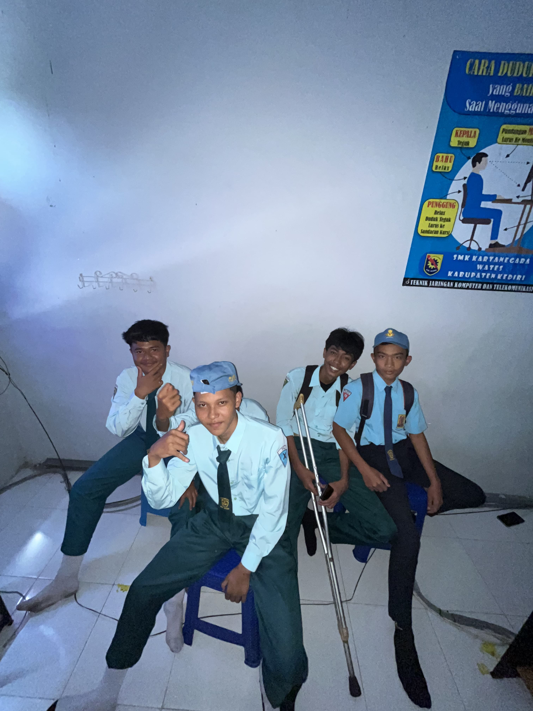
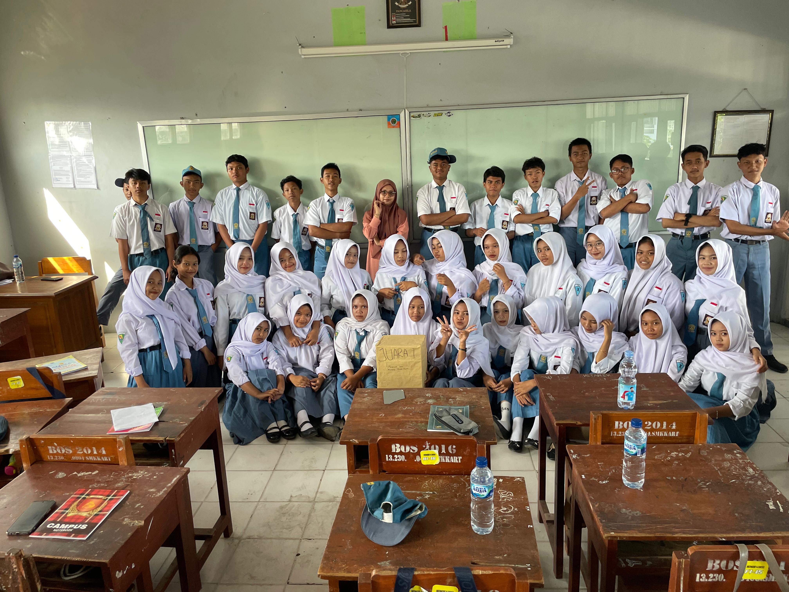
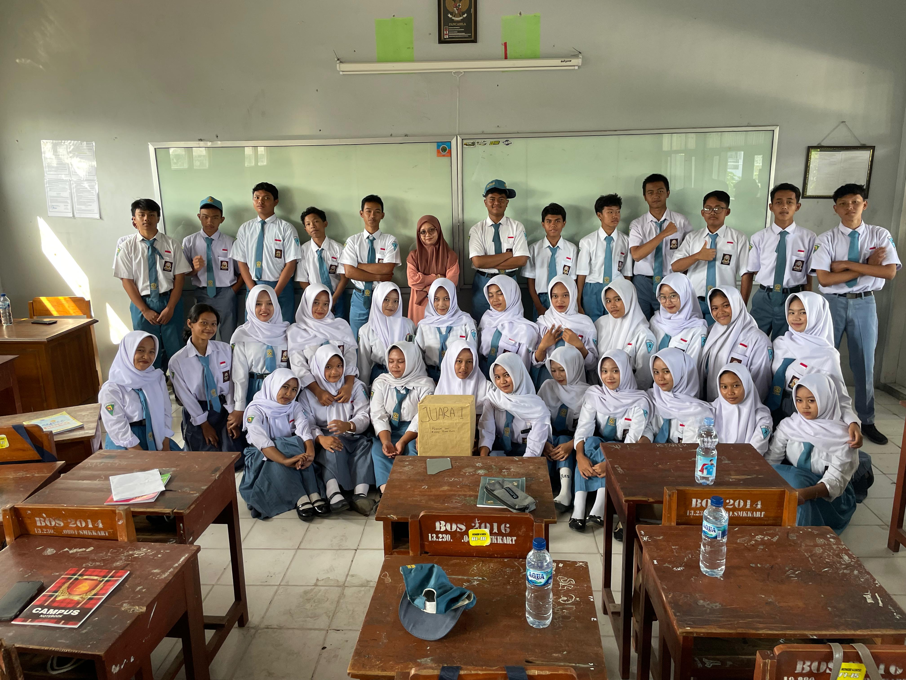

Selamat Datang di Kelas X TKJ 2
Kelas X TKJ 2 adalah kelas yang penuh semangat, kompak, dan kreatif! Di sini para siswa belajar tentang teknologi jaringan komputer dan penerapannya dalam dunia nyata.
Gunakan menu di atas untuk melihat galeri foto kegiatan dan daftar siswa kelas.
Galeri XTKJ2



Daftar Siswa X TKJ 2
| No | Nama | Jenis Kelamin |
|---|---|---|
| 1 | Decha Fiolita | Perempuan |
| 2 | Devan Aprilian | Laki-laki |
| 3 | Dewa Fathur | Laki-laki |
| 4 | Dika Almar | Perempuan |
| 5 | Dina Lestari | Perempuan |
| 6 | Dina Pratiwi | Perempuan |
| 7 | Disca Alfina | Perempuan |
| 8 | Dony Kurnia | Laki-laki |
| 9 | Erlina Elza | Perempuan |
| 10 | Erwintino | Laki-laki |
| 11 | Filifia | Perempuan |
| 12 | Firdan Septaditama | Laki-laki |
| 13 | Fitri Amanda | Perempuan |
| 14 | Fitriani May | Perempuan |
| 15 | Gabriella | Perempuan |
| 16 | Gusti Revin | Laki-laki |
| 17 | Hasan Syadzili | Laki-laki |
| 18 | Hawa Kharismay | Perempuan |
| 19 | Icha Shellia | Perempuan |
| 20 | INTAN NUR LAILA | Perempuan |
| 21 | Iqbal Wahyu | Laki-laki |
| 22 | Irfan Dwi | Laki-laki | 23 | Irma Juliasari | Perempuan |
| 24 | Jagad Maulana | Laki-laki |
| 25 | Jenita Kumala | Perempuan |
| 26 | Jessica | Perempuan |
| 27 | Johanes Lee | Laki-laki |
| 28 | Joseph Haekal | Laki-laki |
| 29 | Kania Septiana | Perempuan | 30 | Keano Vanbauren | Laki-laki |
| 31 | Kevin Wahyu | Laki-laki |
| 32 | Keycha Anggerdinata | Perempuan |
| 34 | Keyla Novita | Perempuan |
| 35 | Lila Hera | Perempuan |
| 36 | Lintang Kirani | Perempuan |
| 37 | Lutfi Mustofa | Laki-laki |
| 38 | Olivia Faradina | Perempuan |